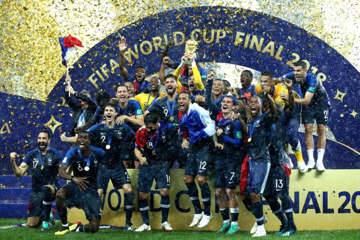
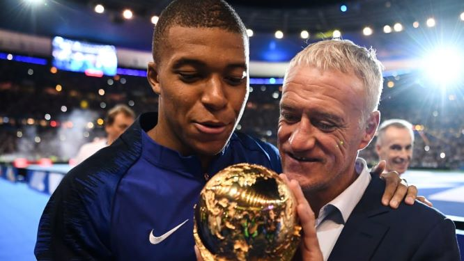

World Champion |
France national football team |
| Youngest Player of 2018 | kylian mbappe |
| Franch National Coach | Didier Deschamps |
The French football team has won the 2018 World Cup, 20 years after it triumphed on home soil in 1998. “Les Bleus”, as they’re called, are back in the nation’s good books, celebrated for their excellent performance in this year’s tournament, right through the 4-2 win over Croatia in the final. Multicultural team of united “black, blanc, beur” (black, white or Arab) players had united under the cause of the French national team to lift the World Cup for the first time. Triumph, on the football field, demonstrated that integration had been successful in France and anyone could reach the top of French society.
Kylian Mbappé Lottin is a French professional footballer who plays as a forward for Ligue 1 club Paris Saint-Germain and the France national team. At the age of 19, he has been labelled the best young player in the world, and has been projected as the future best player in the world.
Didier Claude Deschamps is a French retired footballer who has been manager of the France national team since 2012. He played as a defensive midfielder for several clubs, in France, Italy, England and Spain, such as Marseille, Juventus, Chelsea and Valencia, as well as Nantes and Bordeaux.
